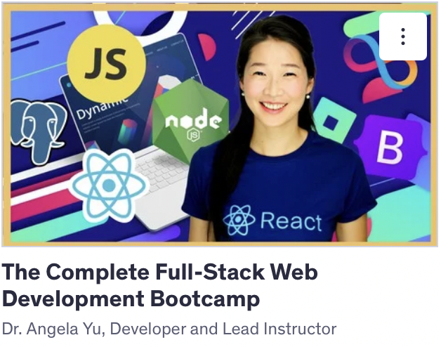
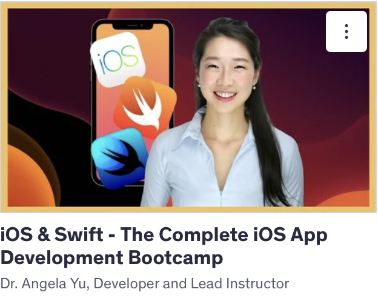
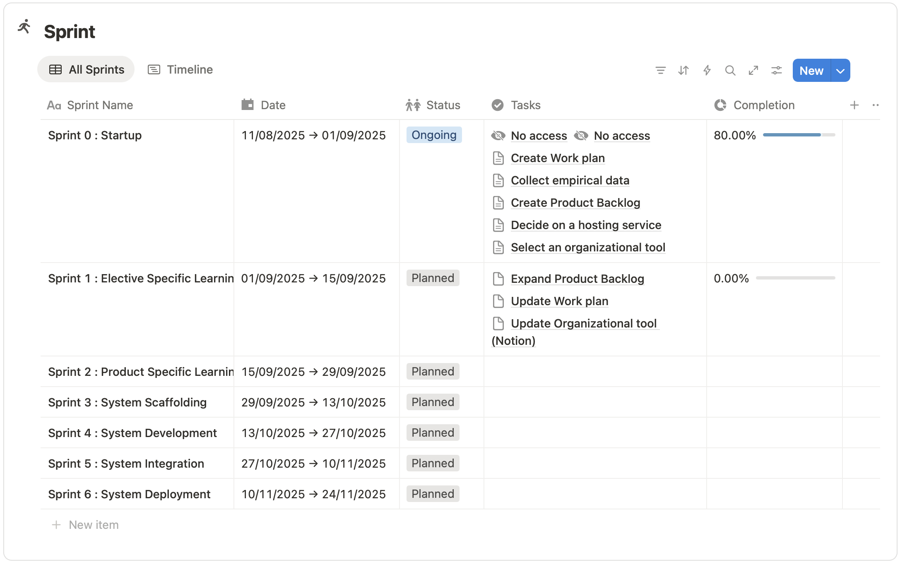

12.08.2025
Første skoledag på 4. semester.
Introduktion til procesteam.
Oprettelse af portefølje.
Porteføljen vil blive brugt som en form for logbog, hvor jeg vil dokumentere min læring og udvikling gennem semesteret.
Jeg har valgt valgfagene "Webudvikling og frontend teknologier" samt "Appudvikling (Web og Mobil)".
I det første valgfag vil jeg fokusere på at lære React.js, i det andet vil jeg lære at bygge iOS apps med Swift.
Det produkt vi vil udvikle i teamet, og som vil skabe ramme for min læring på semesteret, er en læringsplatform a lá itsLearning.
Jeg har ikke tidligere erfaring med at udvikle i React.js eller Swift, så jeg ser frem til at lære disse teknologier.
13.08.2025
Køb af Udemy Kurser.
Planlægning af læring på semesteret.
Første møde med produktteam.
Jeg har købt to kurser på Udemy som vil fungere som fundamentet i min egenlæring på semesteret.
Begge kurser er af Dr. Angela Yu. Det ene er et Full Stack Dev kursus, som bl.a. indeholder et dybdegående segment om React.js
Det andet er et iOS & Swift Dev kursus, som kommer til at danne base for opbygningen af den mobil app jeg skal udvikle.
Vi har desuden haft det første møde på semesteret i vores produktteam, hvor vi har lagt en foreløbig plan for vores arbejde.
De første 4-6 uger kommer hovedsageligt til at handle om egenlæring, hvor vi hver især indsamler viden om vores valgte emner.


21.08.2025
Indsamling af empiri fra personer i de relevante brancher (lærere, teaterfolk etc.)
Udarbejdelse af første udkast til Wireframes for henholdsvis website og app.
Første Guild møder gennemført.
Web Dev kursets første fjerdedel gennemført.
Jeg har den seneste uge fulgt det Web Dev Kursus jeg købte i sidste uge.
Jeg har gennemført delene omkring HTML & CSS, og har så småt taget hul på JavaScript delen.
JavaScript delen er helt fra bunden, så jeg kender koncepterne fra undervisningen på de tidligere semestre.
Jeg følger kurset slavisk og føler det er et godt valg, på trods af at syntax er meget tæt på det jeg kender fra C#.
I ugens løb har jeg snakket med forskellige personer jeg kender fra teaterbranchen, samt med et par lærere i min omgangskreds,
omkring det forestående projekt. Jeg har ved hjælp af deres feedback fået et godt indblik i hvad de hver især søger i et internt system.
Jeg har snakket kort med P.O. Tue, som vil have et udkast til en kravspecifikation klar engang i næste uge.
Derudover har jeg brainstormet lidt og forsøgt at lave et udkast til første version af Wireframes til både Web og App.
Desuden har jeg i dag haft de første Guild møder til begge mine valgfag. Der har af gode grunde ikke været så meget indhold endnu,
jeg har dog fået indblik i hvem der arbejder med samme teknologier som mig, og har fået et godt billede af hvad jeg kan forvente fremadrettet.

28.08.2025
Første Produktteam møde med Tue.
Opsætning af projektstyringssystem (Notion).
Udarbejdelse af foreløbig arbejdsplan.
Udarbejdelse af foreløbig Product Backlog.
Jeg har den seneste uge fortsat arbejdet med mit Web Dev Kursus.
Jeg har lavet små simple JavaScript programmer, for at øve mig i sproget, og få det ind under neglene.
Jeg har nu gennemført modulerne omkring mere avanceret brug af JavaScript og DOM manipulation.
Nu begynder læringen at handle om JavaScript librarys. Jeg har gennemført JQuery modulet, og skal så småt i gang med Node.js samt Express.js.
Så nu er forarbejdet så småt ved at være lavet til at jeg kan kaste mig over det jeg egentligt gerne vil arbejde med, nemlig React.js.
Vi har haft vores første produktteam møde med vores P.O. Tue, hvor vi har udarbejdet en foreløbig kravspecifikation.
Vi har desuden fået opsat Notion med et Management Board, så vi kan planlægge og holde styr på vores fremgang.
Notion er blevet opdateret med foreløbig arbejdsplan, Sprints er blevet planlagt, og der er blevet udarbejdet en Product Backlog.

09.09.2025
Node.js, Express.js & EJS modulerne gennemført.
React.js modul påbegyndt.
Styling af portfolio påbegyndt.
Opsætning af GitHub Repository for portfolio og projekt.
Jeg har siden sidst gennemført Node.js, Express.js og EJS modulerne i mit Udemy kursus.
Jeg er startet på React.js delen, og vil løbende bruge de færdigheder jeg får, til at opdatere min portfolio.
Indtil videre har jeg kun brugt simpel html og css, men vil løbende opdatere med React komponenter.
Jeg har desuden opsat GitHub Repositories til både min portfolio og mit projekt og forbundet dem til mit eget domæne via SSH.